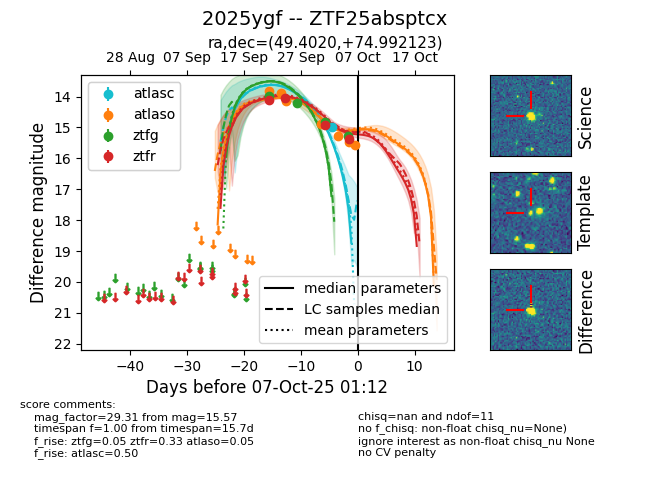
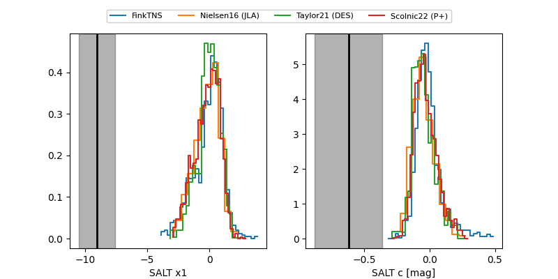

FINK: ZTF25absptcx
Lasair: ZTF25absptcx
ALeRCE: ZTF25absptcx
TNS: 2025ygf
YSE: 2025ygf
ZTF25absptcx (ztf,fink)
2025ygf (tns,yse)
equatorial (ra, dec) = (49.4020,+74.99212)
galactic (l, b) = (132.1079,+14.78970)


last atlasc=15.00, atlaso=15.57, ztfg=15.28, ztfr=15.36
1 atlasc, 7 atlaso, 4 ztfg, 4 ztfr detections